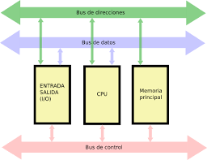

Línea del tiempo de las aplicaciones web

¿Qué pasó en estos años?
1945: Arquitectura de Von Neumann
Contexto Histórico: John von Neumann desarrolló esta arquitectura mientras trabajaba en el Proyecto EDVAC (Electronic Discrete Variable Automatic Computer). Su propuesta se documentó en el "First Draft of a Report on the EDVAC".
Componentes Clave:
- CPU (Unidad Central de Procesamiento)
- Memoria principal (almacena datos e instrucciones)
- Buses de Datos, Dirección y Control
- Dispositivos de Entrada/Salida
Ciclo Fetch-Decode-Execute: Obtención, decodificación y ejecución de instrucciones.
Ventajas: Flexibilidad y bajo costo.
Desventajas: Cuello de botella de Von Neumann.
1948: Teoría de la Información (Claude Shannon)
Contexto Histórico: Claude Shannon, en Bell Labs, publicó "A Mathematical Theory of Communication" unificando la comunicación analógica y digital.
Conceptos Clave:
- Bit como unidad de información
- Entropía: mide la incertidumbre de una fuente de datos
- Capacidad del canal: máxima tasa de transmisión sin errores
- Codificación de fuente y de canal para compresión y corrección de errores
Aplicaciones: Compresión de datos (JPEG, MP3), criptografía, telecomunicaciones, redes de datos.